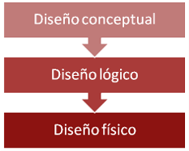

El proceso de diseño lógico El proceso de diseño lógico en el modelo relacional:
- Se transforman en tablas todas los tipos de entidades y relaciones que aparecen en el diagrama E/R.
- Se seleccionan las claves primarias para cada una de las tablas de nuestro esquema lógico.
- Se fusionan aquellas tablas que compartan su clave primaria. En este paso ha de elegirse la estrategia más adecuada para representar en el modelo relacional cada una de las jerarquías de especialización/generalización que aparezcan en el diagrama E/R.
- Se normaliza el esquema resultante. Cuando se decida no normalizar tras haber encontrado una dependencia entre los atributos de una relación, se ha de justificar el por qué (p.ej. CP→Municipio en una dirección, pero tal vez no nos interese tener que mantener una tabla aparte con todos los municipios de España y sus códigos postales).
- Se definen todas las restricciones de integridad que sean aplicables al esquema obtenido (claves primarias, claves alternativas, claves externas, dominios de los atributos y restricciones asociadas a las tuplas de cada relación).
Un modelo lógico de datos es un modelo que no es específico de una base de datos que describe aspectos relacionados con las necesidades de una organización para recopilar datos y las relaciones entre estos aspectos.
Un modelo lógico contiene representaciones de entidades y atributos, relaciones, identificadores exclusivos, subtipos y supertipos y restricciones entre relaciones. Un modelo lógico también puede contener objetos de modelo de dominio o referirse a uno o varios modelos de dominio o de glosario. Una vez definidas las relaciones y los objetos lógicos en un modelo lógico de datos, utilice el entorno de trabajo para transformar el modelo lógico en una representación física específica de la base de datos en forma de modelo físico de datos.
Los objetos del modelo lógico siempre están contenidos en un objeto de paquete raíz. Siempre hay un paquete raíz, pero puede añadir paquetes adicionales bajo el paquete raíz para agrupar objetos similares.Mediante el entorno de trabajo, puede crear un modelo lógico de datos a partir de una plantilla. También puede importar tipos de datos simples de un archivo de definición de esquemas XML (.xsd) en un modelo lógico de datos como tipos de dominio.
